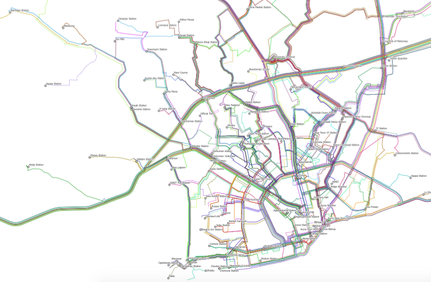

La plateforme Itinerum a été réalisée dans le cadre d’un projet de recherche mené par Zachary Patterson du département de géographie, d’urbanisme et d’environnement à l’Université Concordia à Montréal. L’objectif initial de l’application Itinerum pour téléphones intelligents (anciennement DataMobile) était de recueillir des données sur les habitudes de déplacement des étudiants, du corps professoral et du personnel de l’Université Concordia. L’application recueille des informations de localisation portant sur les déplacements de l’utilisateur grâce à leur téléphone intelligent.
Un projet pilote visant l’ensemble de la communauté Concordia a été mené du 10 novembre au 5 décembre 2014. Près de 900 personnes ont participé au sondage. Le projet DataMobile, ainsi que les résultats du sondage mené en novembre et en décembre 2014 sont décrits dans le document « DataMobile: A Smartphone Travel Survey Experiment » qui sera également publié en 2016 dans le Transportation Research Record.
Si vous souhaitez tester DataMobile ou visualiser vos propres données recueillies par DataMobile ou si vous souhaitez utiliser DataMobile pour un de vos projets, veuillez communiquer avec Zachary Patterson à l’adresse zachary.patterson@concordia.ca.
MTL Trajet était un sondage à grande échelle portant sur les déplacements (plus de 10 000 téléchargements) qui a été mené par la Ville de Montréal en novembre et en décembre 2016. Consultez les résultats détaillés de ce sondage qui seront publiés au début de l’hiver 2017. Pour obtenir des informations additionnelles sur ce sondage, visitez la page Web de la Ville ici.
CFSMobile est l’application utilisée comme composante GPS dans le cadre de l’étude Canada Food Study sur les aliments au Canada menée par le professeur Dave Hammond à l’Université de Waterloo. L’application CFSMobile a été utilisée dans le cadre de cette étude menée en novembre et en décembre 2016 dans les villes de Vancouver, Edmonton, Toronto, Montréal et Halifax. Visitez le site Web de l’étude Canada Food Study pour obtenir des informations additionnelles.
Ce projet mené par l’Accra Municipal Assembly Department of Transport (DOT) et l’Agence française de développement (AFD) utilisait AccraMobile pour le mappage des lignes d’autobus (Trotro) dans la ville d’Accra, la capitale du Ghana. Cette carte géographique (illustrée ci-dessous) a été dévoilée le 9 décembre 2015 à Accra par l’honorable Vanderpuije, le maire d’Accra.
Le dévoilement de cette carte géographique a eu lieu dans le cadre d’un atelier sur les technologies mobiles pour la planification intelligente des transports à Accra.
Voici la présentation donnée par Zachary Patterson et Alex Johnson lors de l’atelier.
La première étape de ce projet ainsi que les résultats sont décrits dans le document intitulé « Mapping Accra’s Jitney Network with Smartphones : The AccraMobile Experiment » et ils seront présentés dans le cadre de la réunion annuelle de 2016 du Transportation Research Board dans la ville de Washington DC. Cela aura lieu lors de la séance 601 de mardi (12 janvier 2016) de 13 h 30 à 15 h 15 dans la salle 150B du palais des congrès. Ce document sera également publié dans le Transportation Research Record.
La deuxième phase du projet AccraMobile portait sur la conversion des données recueillies au cours de la phase 1 au format GTFS et la production d’une carte pour les utilisateurs de Trotro. Cette fin de semaine, l’Accra Municipal Assembly en collaboration avec l’AFT, le MEST et le laboratoire TRIP de l’Université Concordia ont organisé un marathon de programmation. Vous pouvez télécharger la nouvelle carte ici.
Vous pouvez télécharger notre document le plus récent qui analyse la variance dans les itinéraires ici. Il sera présenté lors de la réunion annuelle de 2017 du TRB. Cela aura lieu lors de la séance 673 de mardi (le 11 janvier 2017) de 13 h 30 à 15 h 15 dans la salle 144A du palais des congrès. Ce document sera également publié dans le Transportation Research Record.
2017 verra l’utilisation d’Itinerum dans plusieurs études novatrices portant sur différents aspects du système de transport dans le cadre d’un partenariat Itinerum. Les études seront menées par :